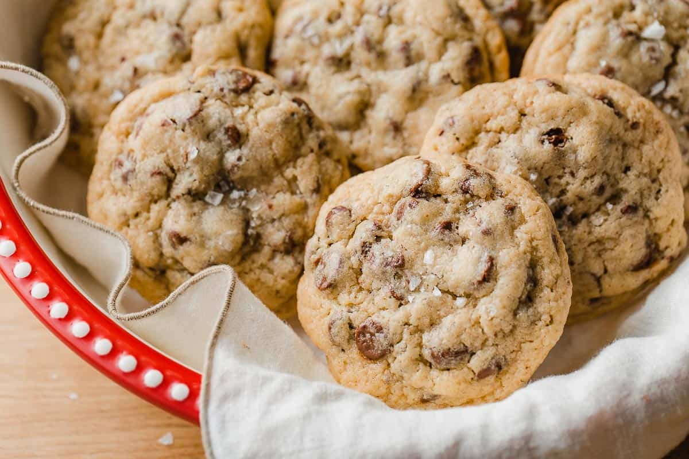

Home
Sourdough Chocolate Chip Cookies

Sourdough Discard Chocolate Chip Cookies Recipe
These bakery-style cookies are soft, thick, and chewy. Loaded with chocolate chips in every bite!
Sourdough discard makes a naturally fermented cookie that your family will rave about.
They are everything you're looking for when it comes to homemade chocolate chip cookies, but better!
Ingredients
- 95 g all-purpose flour
- 125 g bread flour
- 1 teaspoon fine sea salt
- ¼ teaspoon baking soda
- ½ teaspoon baking powder
- 1 large egg
- ½ cup sourdough starter discard
- 1 teaspoon vanilla extract
- 8 teaspoons unsalted butter
- ½ cup light brown sugar
- ½ cup white granulated sugar
- 1 ½ cups chocolate chips
Instructions
- Use a whisk or a fork to mix the bread flour, all-purpose flour, baking soda, baking powder and salt in a small bowl. Set aside.
- In a separate small bowl, use a whisk or a fork to beat the egg, vanilla extract and sourdough starter until smooth. Set aside.
- Place the cold, cubed butter, light brown sugar and granulated sugar into the bowl of a stand mixer with the paddle attachment. Beat on low-speed until the mixture forms small crumbles, 45-60 seconds. Add the chocolate chips and mix on low-speed 30-45 seconds. Scrape down the sides of the bowl.
- Add the dry ingredients and mix on low-speed until the batter starts to become a crumbly mixture, 20-30 seconds. Pour in the egg mixture and mix on low-speed until the dough comes together and starts to pull away from the sides of the bowl, 20-30 seconds. Use a spatula to stir the batter, ensuring all of the ingredients have been fully incorporated.
- Use a cookie scoop to portion the dough into 12 balls, (2 scoops per cookie) and place them on a parchment-lined baking tray. Cover the dough with a sheet of plastic wrap so they do not dry out. Chill the dough in the fridge for a minimum of 2 hours.
- Bake in a preheated, 375°F (190°C) oven for 15-17 minutes, or until the edges are golden brown and the center still appears slightly under-baked. Remove and allow the cookies to rest on the baking sheet for 5 minutes before transferring them to a cooling rack.